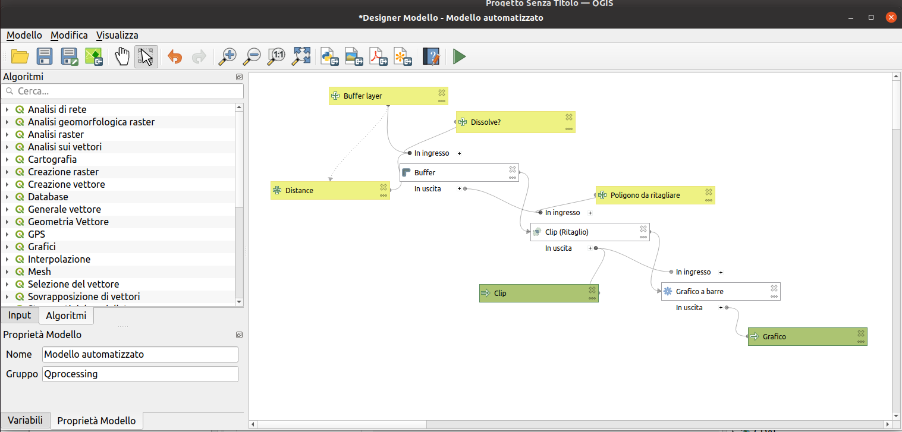
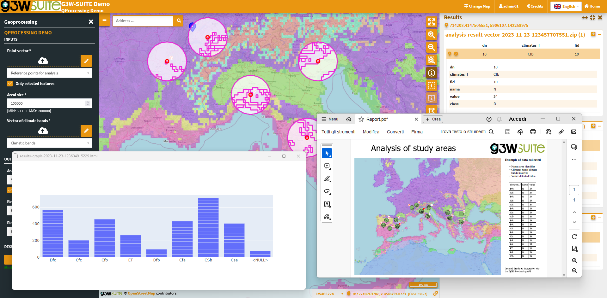
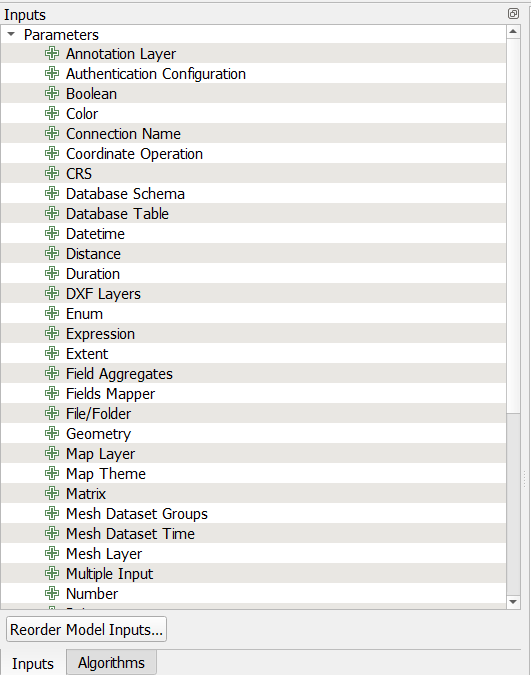
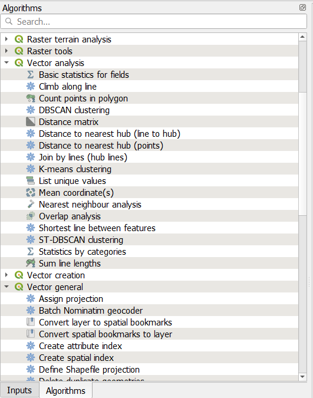
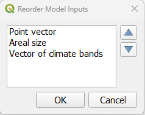
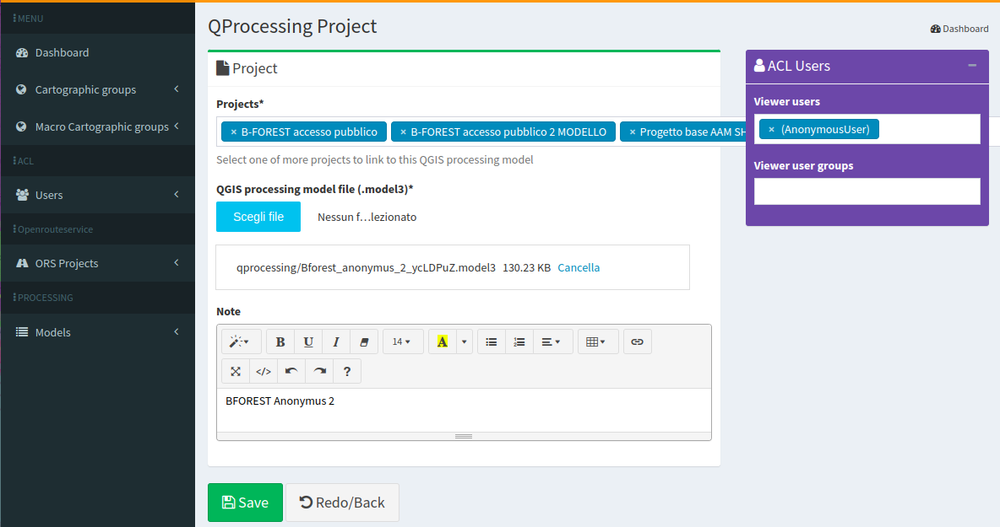
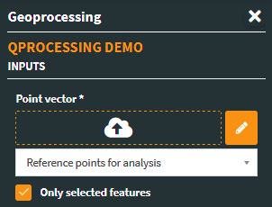

Model Builder & Processing
Release date: 13 December 2023
The module dedicated to the creation of geographic analyzes on the web is based on the automated analysis models prepared on QGIS through the Processing ModelDesigner.
The setup flow is very simple:
- Set up your analysis model on QGIS using the ModelDesigner
- Upload the model file (.model3) to G3W-SUITE and associate it with one or more WebGis projects
- The model is used directly on the web side, displaying and downloading the results created
The analyzes are performed in "on line" mode. At the end of the analysis flow, the results will be uploaded to the map (if geographical) and available for download.
Even if the analysis operations to be performed are limited to those performed by a single analysis module, it is necessary to implement a model using the ModelDesigner. This is also to distinguish the options set beforehand from those available to the user.


QGIS Model Builder features and settings
Input type supported
- Boolean
- Distance
- Fields Mapper
- Number
- Raster Layers
- Vector Features (selected feature of a layer)
- Vector Layers
It is also possible to define project layers as default input of the individual modules.
This option limits the use of the model to a specific project or to projects containing the layers defined as inputs.
Additional input types will be integrated into the next version of the module!

Managed algorithms
All QGIS modules, considering limitations in handling options/inputs associated with managed type of inputs

Further settings
- input order in the model form

G3W-SUITE: features and settings
How to import analysis models created in QGIS to G3W-SUITE
Access the PROCESSING - MODEL session in the Administration session, choosing the ADD MODEL item:
- Load the .model3 file relating to the analysis model to import
- Choose the projects to associate the model with
- Choose the users (among those who have permission to access the selected projects) who will be able to use the model on WebGis

Input layer type supported
- Project layers (all or only selected features)
- Layers loaded on the fly
- Geometries drawn on the map

Output types supported
- vectors (Shapefile, GeoJSON, KML, KMZ)
- CSV
- rasters
- PDF export (print layout simple and atlas)
- HTML plots